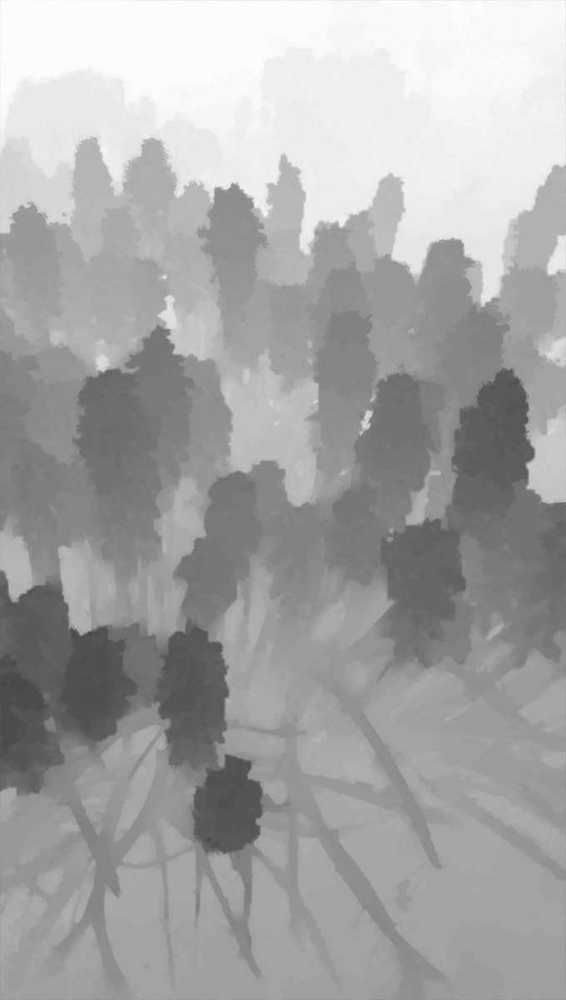
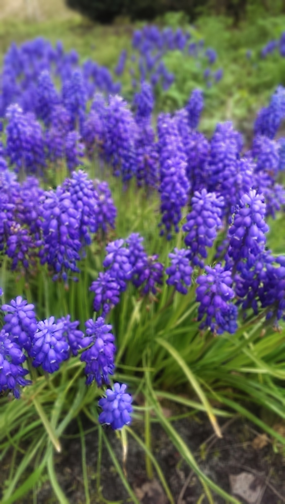
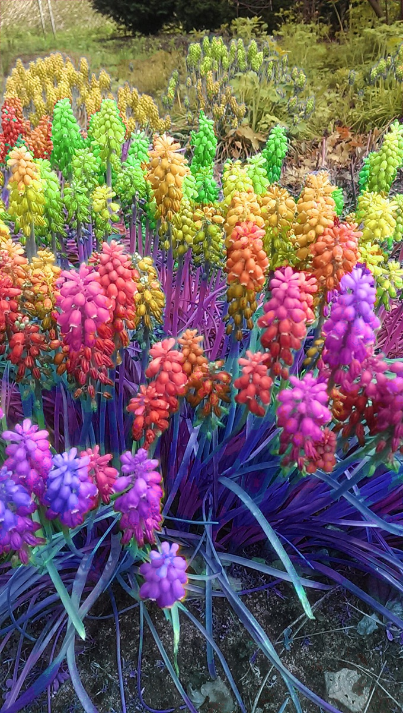
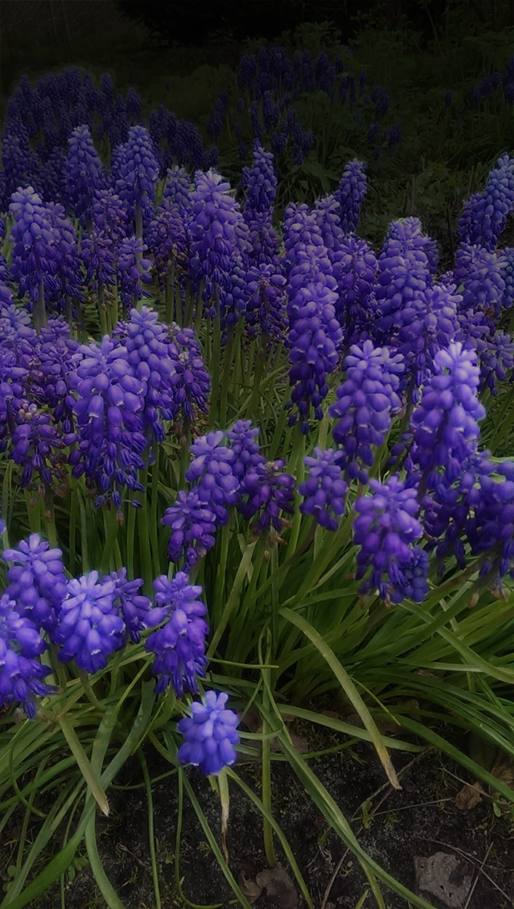
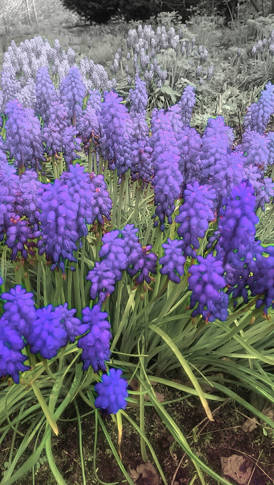
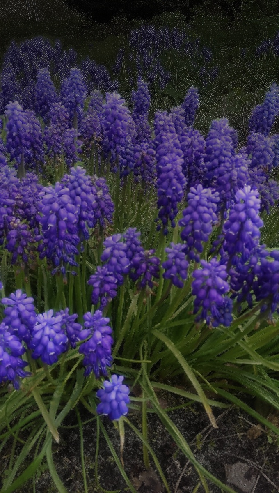
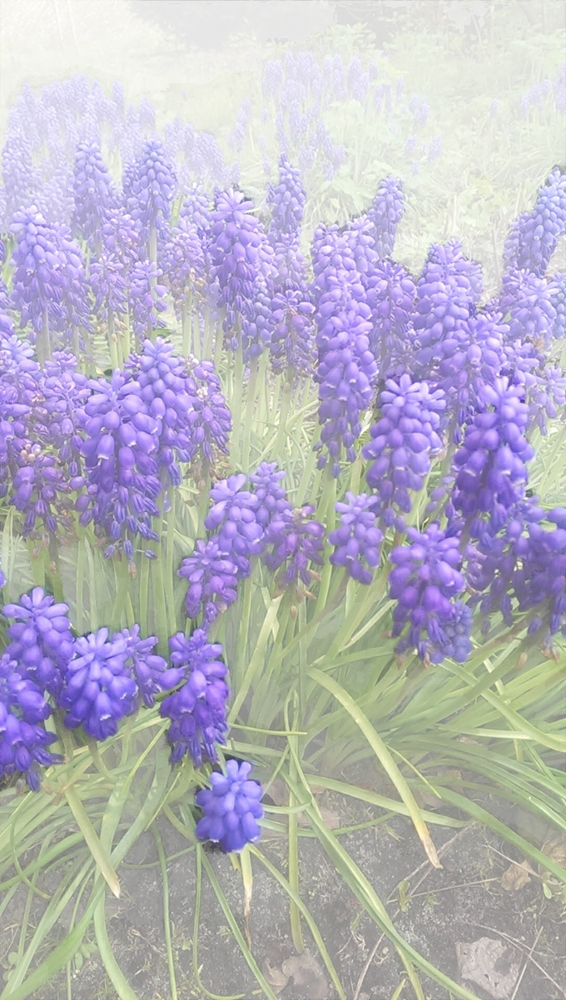

Depth-Varied Filters
Apply filters to image using depth map to vary intensity.
Requirements
- Python 2.7+
- OpenCV 2.4+ with Python support
- Numpy
Inspiration
This originated as a project for the Computational Photography Spring '15 at Georgia Tech. I was inspired by the Google Camera for Android Lens Blur feature and thought: "Blur is pretty cool. What would other filters look like?"
Run
$> python main.py INPUT.JPG DEPTHMAP.JPG LAYERS
LAYERS is optional (default=15). LAYERS must be an integer.
Example:
$> python main.py Flowers-alternative.jpg Flowers-depthmap.jpg 20
^ The flower images used are from: Depthy.me [github]
Create Your Own
You can use Google Camera Lens Blur to create an image and then pull out the source image and depth map using depthy.me.
Future Ideas
- apply multiple filters
- smooth blending between layers (Gaussian blending)
- add plane selector for z-origin
- additional filters
Author
Bran Sorem <bransorem@gmail.com>
Example Input
| Input image: | Input depth map: |
 |
 |
Examples
| Blur | Hue | Night |
|  |  |  |
| Saturation | Laplacian | Fog |
|  |  |  |